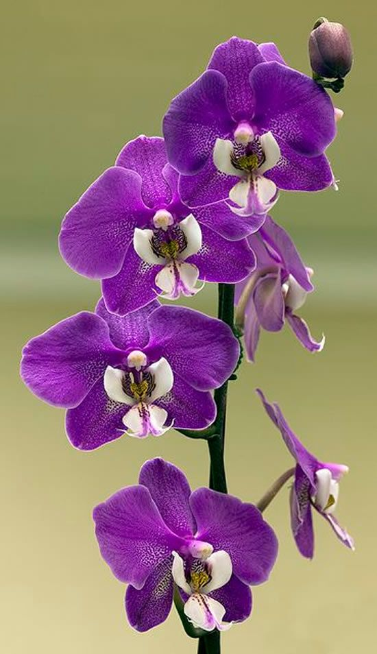

Orquídeas
As orquídeas são flores elegantes e exóticas conhecidas por sua incrível diversidade de formas, cores e tamanhos. Elas pertencem à família Orchidaceae, uma das maiores famílias de plantas do mundo. As orquídeas têm flores simétricas, geralmente com três pétalas e três sépalas, sendo que a pétala central, chamada de "labelo", é muitas vezes maior e diferenciada, atraindo polinizadores. Elas podem ser encontradas em uma vasta gama de cores, como branco, rosa, roxo, amarelo, laranja, vermelho e até combinando diferentes tons.
Essas plantas são epífitas, o que significa que crescem em troncos ou galhos de árvores, absorvendo umidade e nutrientes do ar. Embora sejam associadas a climas tropicais, as orquídeas podem ser encontradas em quase todos os ambientes, exceto os desertos mais áridos e as regiões polares.
Orquídeas requerem cuidados específicos, como rega controlada, boa ventilação e luz indireta, sendo bastante apreciadas em coleções e ornamentações de interiores. Além de sua beleza, também têm significados simbólicos, associados à pureza, amor e beleza refinada.